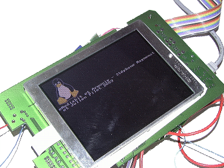

opticode.ch
Votre spécialiste en matière de vision par ordinateur et d'informatique de pointe.
opticode.ch est une entreprise qui fournit des services très pointus de conseil, de formation et de développement dans le domaine de l'informatique.
N'hésitez pas à nous contacter!
Services
Opticode.ch fournit des services de consulting dans les domaines suivants:
- Vision par ordinateur
- Relecture de code systématique
- Conseils scientifiques et en relations académiques
- Informatique embarquée
- Développements spécialisés
Vos missions seront effectuées par Julien Pilet, chercheur en vision par ordinateur et ancien développeur chez Google.
Vision par ordinateur
est spécialisé en vision par ordinateur, plus particulièrement dans les domaines suivants:
- Détection et tracking d'objets
- Segmentation
- Calibration de caméras
- Recherche dans de grandes bases de données
- Réalité augmentée
- Mesure d'objets déformés
Pour obtenir de bonnes performances, nous travaillons la plupart du temps en C++, en utilisant si nécessaire des instructions SIMD comme SSE ou NEON. Nous avons aussi une grande expérience dans l'utilisation d'OpenCV.
Conseils scientifiques et relations académiques
vous propose ses conseils scientifiques en matière d'informatique, d'électronique et de vision par ordinateur.
peut également aider votre entreprise à mettre en place une collaboration avec le milieu académique. Voici un exemple typique de collaboration: la commission pour la technologie et l'innovation (CTI) finance un ou deux postes dans une haute école, comme l'EPFL ou une HES-SO. L'entreprise partenaire s'engage à mettre les mêmes efforts en interne. L'entreprise peut utiliser les résultats pour ses produits.
Systèmes embarqués
 fournit les services suivants:- Programmation de systèmes embarqués;
- Programmation de microcontrolleurs en C++, C, assembleur, ou autre language;
- Programmation de drivers pour Windows, Mac ou Linux;
- Conseil en développement de matériel dédié;
- Prototypage rapide.
Contactez-nous pour obtenir un devis!
a de l'expérience en matière de systèmes embarqués, que ce soit dans la conception du matériel ou la programmation. Julien Pilet a par exemple développé la carte Armonie en collaboration avec Stéphane Magnenat. Ce système intègre un processeur ARM, 64 MB de mémoire vive, et 1MB de mémoire flash. Nous avons écrit notre propre boot loader et notre propre interface de déboguage GDB: Jelie.Développements spécialisés
vous assure les services d'un développeur extrêmement compétent et polyvalent pour des missions précises:- Optimisations par conception d'algorithmes plus performants;
- Optimisations SIMD comme SSE ou NEON;
- Aide temporaire pour vous permettre de terminer un projet à temps;
- Amélioration d'applications mobiles;
- Développement de drivers pour Windows, Mac ou Linux
- Développement d'application web HTML5
- Analyse de performance d'une application
- Déboguage de fuite de mémoire d'un programme en C++
- Développement d'applications dans le cloud: traitement à grande échelle avec Hadoop, mapreduce et base de données "no sql";
- Assistance pour tout autre problème survenant lors d'un développement logiciel.
Relecture de code
Qu'est-ce que la relecture de code?
La relecture de code (code review, en anglais) est un outil fantastique qui permet d'améliorer grandement la qualité du code produit par une équipe de développement.
Le concept est simple: écrire le code pour les collègues plutôt que pour la machine. En pratique, des outils comme gerrit code review ou review board facilitent la relecture et la discussion à propos du code.
Les avantages de la relecture de code
Lorsque le code est écrit pour être compris par les collègues plutôt que par l'ordinateur, les avantages sont immédiats:
- Le code est compréhensible et donc plus facile à maintenir;
- Le code a moins de bugs, puisque certains sont trouvés à la relecture;
- Le relecteur apprend de l'auteur à la lecture d'une solution particulièrement élégante;
- L'auteur apprend du relecteur lorsque celui-ci propose une meilleure manière de résoudre un problème;
- Le code suit le style décidé par l'équipe. Il est homogène et plus facile à lire;
- Les membres de l'équipe sont au courant des travaux de leurs collègues.
Les services en matière de relecture de code
vous aide à mettre en place la relecture de code dans votre équipe, en plusieurs étapes:
- Un spécialiste, ancien développeur chez Google, rencontre votre équipe pour en comprendre les méthodes de travail;
- Votre équipe détermine, sur les conseils d', une méthode de travail qui correspond exactement à vos besoins spécifiques;
- Nous mettons en place les outils nécessaires;
- Nous présentons la méthode choisie à toute l'équipe;
- Nous supervisons les premiers pas des développeurs dans l'utilisation de la méthode choisie. L'équipe continue de travailler sur ses tâches en cours, de manière à ce que la mise en place de la relecture de code systématique prenne le moins de temps possible.
L'entreprise
Opticode.ch est une SàRL fondée par Julien Pilet en 2013.
Contactez !
| julien.pilet@opticode.ch | |
| téléphone | +41 79 935 28 57 |
| skype | julienpilet |
| adresse | Julien Pilet, Rue Neuve 6A, 1020 Renens VD, Suisse |